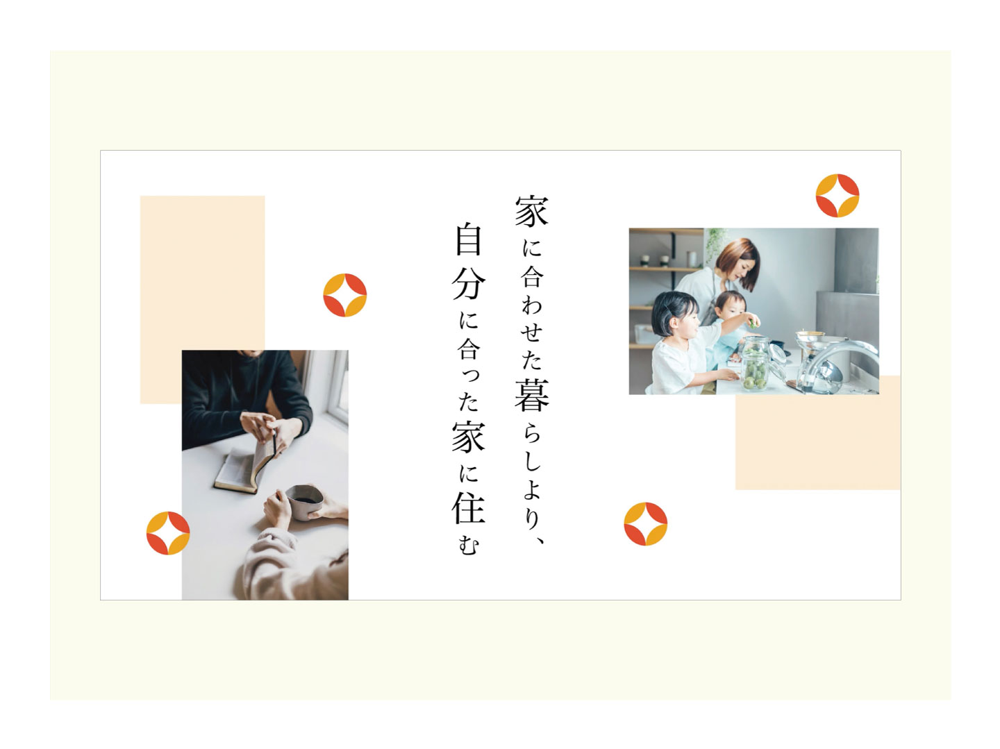
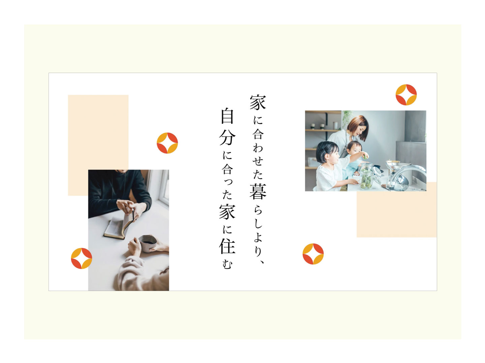

【課題制作】建設企業のコマーシャル（10秒）制作

分譲住宅施工からリフォームを行う企業の電車の映像広告制作。
目的
企業の認知
ターゲット
35〜40歳／男女
デザインコンセプト
お客様の思いを大切にしている丁寧さや温かみを反映。「家」ではなく、「人」に焦点を当てたショートCM（10秒）。メッセージや写真が、ふわっと現れてから、最後にロゴが表示される構成。電車の映像広告のため、音声がなくても理解できるものとした。
担当
企画／編集
期間
| コンセプト（絵コンテ） | ：2時間 |
|---|---|
| 編集 | ：4時間 |

分譲住宅施工からリフォームを行う企業の電車の映像広告制作。
企業の認知
35〜40歳／男女
お客様の思いを大切にしている丁寧さや温かみを反映。「家」ではなく、「人」に焦点を当てたショートCM（10秒）。メッセージや写真が、ふわっと現れてから、最後にロゴが表示される構成。電車の映像広告のため、音声がなくても理解できるものとした。
企画／編集
| コンセプト（絵コンテ） | ：2時間 |
|---|---|
| 編集 | ：4時間 |